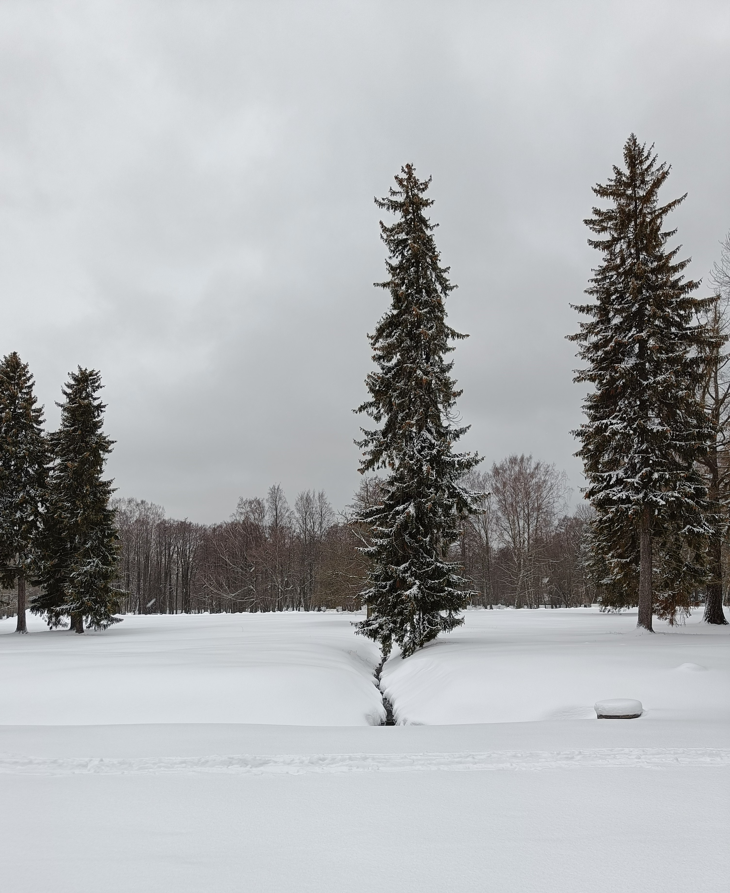
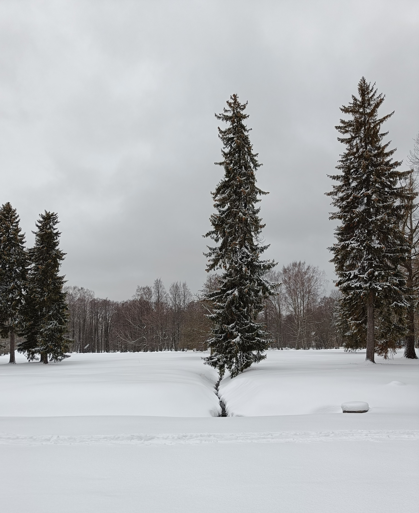

UX/UI Designer👋 an international student studying Communication & Multimedia Design at The Hague University of Applied Sciences
I grew up in the capital city of Estonia and lived there for almost 20 years. In the midst of moving to Germany to study tourism management, I was forced to cancel my plans due to covid. My passion for UX/UI design came about when I was on the hunt for my new career path. Through my journey, I have come to the Netherlands where I am currently majoring in user experience design and developing my future here.
 

In my free time, I love to try out new things, but I also enjoy getting cozy and watching movies. Since I like to multitask, I always do something in the meantime - knitting socks for Christmas, embroidering, baking, and playing on Switch. To expand my skills and challenge myself, I am always up for trying new things, like running 16km in the mud or going waterskiing.
The best part about UX design for me is prototyping, I can get lost in time when I begin with it. I could do that for the rest of my life. By studying Communication & Multimedia Design my interest in UX/UI Design, and Web Design grew tremendously. During my internship at Orbital Eye, I got a chance to improve and learn new skills, and also get to know more about satellite monitoring. My interest in space had already been piqued beforehand, but it taught me so much more about it.